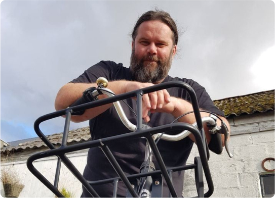

Sykkel kul-tur
Sykkel kul-tur med guide i området, Ogna, Brusand & Sirevåg. Vi har så mange kjekke sykkel kul-tur ruter vi jobber med, lokal guide skal ta deg/dere med på en flott sykkel kul-tur opplevelse her i søre Hå. Turene vil passe for enkeltpersoner, par, vennegjenger & firma. Vi har kjøpt inn 20 flotte “trøkameler” til å utforske Ogna, Brusand & Sirevåg området. Alt skal foregå i rolig og avslappet tempo. Det eneste som kreves er at du kan sykle.